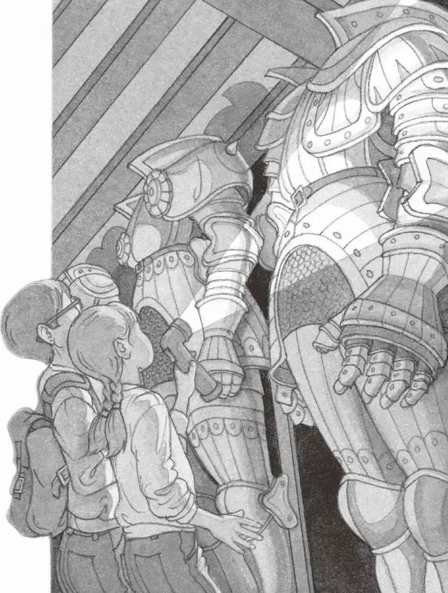
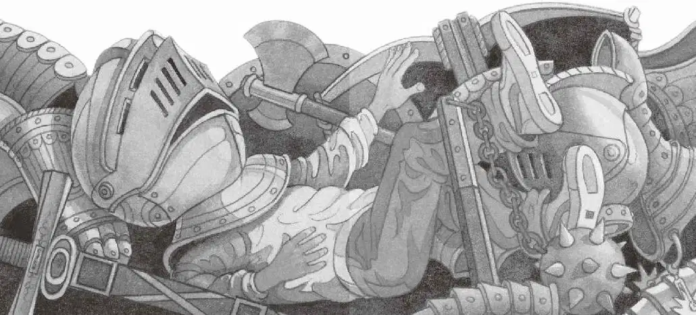

“快跑啊！”安妮大喊。
杰克跟在安妮后面奔跑。
“这儿！快！”安妮冲向走廊旁边的一扇门。
她把门推开，两人跌跌撞撞地进入了一个漆黑而阴冷的房间。
门在他们身后吱吱嘎嘎地关上了。
“把手电筒给我。”安妮一把从杰克手里接过手电筒，拧开开关。
“哇！”安妮惊呼。
整整一排骑士，就站在他们面前！
安妮赶紧关上手电筒。
周围一片寂静。
杰克轻声说：“他们好像都没有动。”
安妮又试探性地把手电筒拧开。
“你看，这些只是一套套的盔甲。”杰克说。
“都没有脑袋。”安妮说。

“把手电筒给我，让我看看书里是怎么说的。”杰克说。
安妮把手电筒递给杰克。
杰克接过手电筒，从包里抽出那本骑士和城堡书。

他一边翻一边找，终于找到了他想看的东西。
杰克放下书，说：“这个地方叫军械库，是存放盔甲和武器的地方。”
杰克用手电筒向房间四周照了照。
“哦，天哪！”杰克不禁低声惊叹。
光柱落在闪闪发亮的护胸甲、护腿甲和护臂甲上。
落在满满当当地放着头盔和武器的架子上。
落在盾牌、长矛、宝剑、弓弩、棍棒和战斧上。
这时，走廊里传来了一阵声响。
好像有人来了。
“快藏起来！”安妮催促道。
“等一等，”杰克说，“我得先核实一件事情。”
“快点儿。”安妮叫道。
“马上就好，你先拿着这个。”杰克说着把手电筒递给安妮。
杰克想从架子上拿一个头盔，但头盔实在是太重了。
他只能弯下腰，把头盔一点点地拖到自己的脑袋上。
啪！面罩合上了。
“哎哟，好家伙！比脑袋上顶一个五岁小孩还糟糕，这更像是一个十岁小孩的重量！”杰克想。
他不仅头抬不起来，而且什么都看不见了。
“杰克！那些人越走越近了！”
安妮的声音听起来是那么遥远。
“把手电筒关掉！”杰克的声音在金属小密室里回荡。
他使劲晃动脑袋，想把头盔甩下来。
可他一不小心失去了平衡，撞在身后的一排盔甲上。
哗啦啦！
那些金属片和武器全都被撞倒在地，发出一片巨响。
杰克隐约听见有低沉的说话声。
他躺在地上，四周漆黑一片。
他拼命想站起身，可是脑袋太重了。
有人抓住了他的胳膊，接着，他的头盔被粗暴地摘掉了。
在他惊愕的目光前，是一个熊熊燃烧的火把。